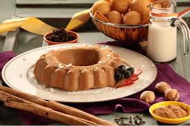

¡BIENVENIDO!
Exploremos Recetas Juntos...
En esta pagina podras enocontrar recetas de magnificos platos, ¡Nacionales e Internacionales!
Aqui a la izquierda puedes encontrar videos sobre nuestras recetas mas recientes.
En esta pagina podras enocontrar recetas de magnificos platos, ¡Nacionales e Internacionales!
Aqui a la izquierda puedes encontrar videos sobre nuestras recetas mas recientes.
Es un plato característico de la zona de Antioquía,
pero que se puede disfrutar en cualquier parte del país.
Está elaborada con 10 ingredientes esenciales:
arroz, chorizo, huevo, carne molida, aguacate,
chicharrón de cerdo, frijoles, arepas, morcilla y plátano maduro.
leer más...
Historia de la gastronomía colombiana Colombia es un país lleno de historia, multiculturalidad y diversidad. Es por esto que en la gastronomía colombiana se encuentra una infinidad de sabores e influencias que son muestra de todos los procesos históricos que ha vivido la nación, como por ejemplo, la colonización. La cocina colombiana es una mezcla cultural de tres grandes grupos étnicos: españoles y africanos que se juntaron a los indígenas locales. Además, se deben considerar las migraciones asiáticas, árabes y alemanas entre otras. Todo esto da como resultado lo que hoy conocemos como la comida típica de Colombia.


